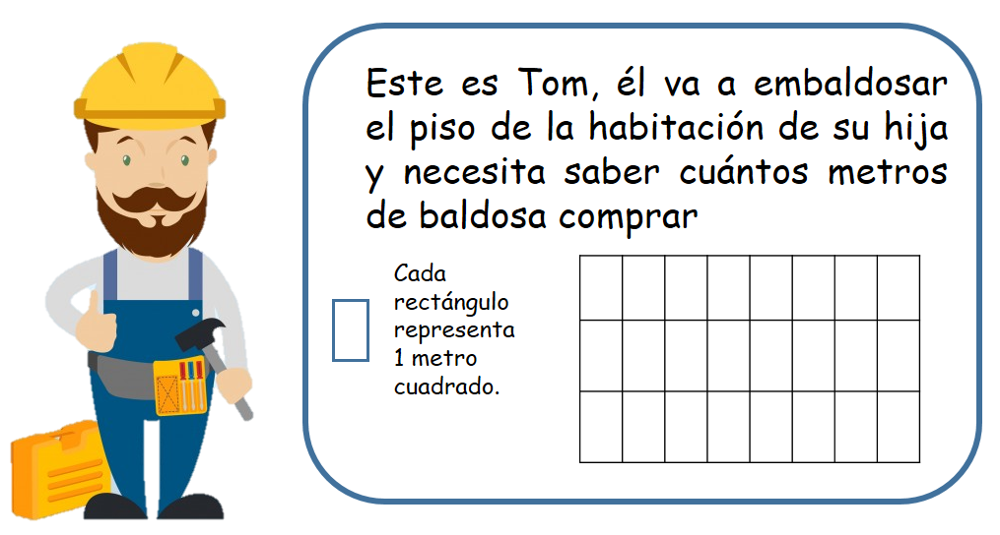
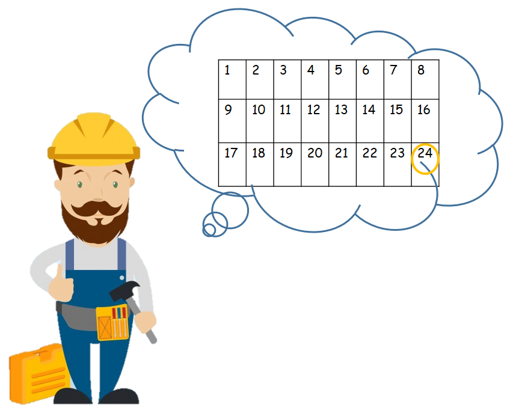
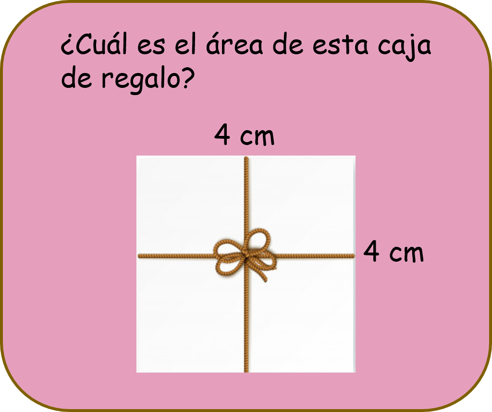
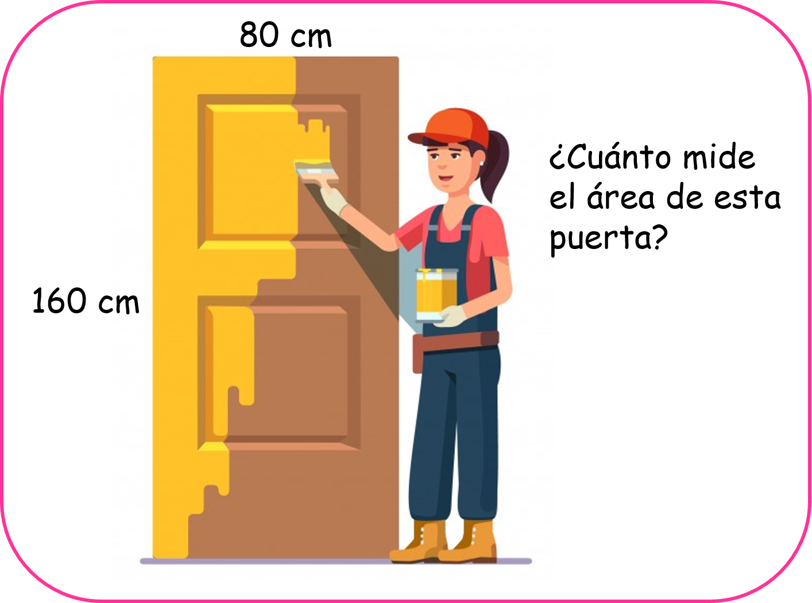
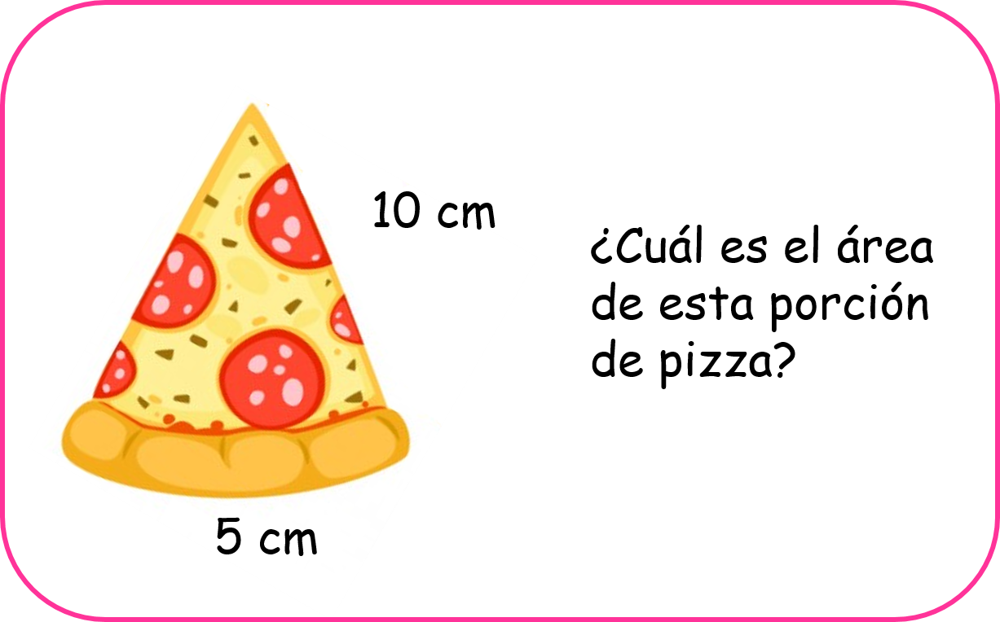

Área del cuadrado, el rectángulo y el triángulo
En este capítulo vas a usar la multiplicación y la división
¿Qué es el área de una figura y para qué nos sirve?
Todo el tiempo estamos midiendo las cosas que nos rodean, aun cuando no te das cuenta, piensa por ejemplo en situaciones como cuando ves una camisa y sabes inmediatamente que no te serviría porque percibes que es más pequeña que tu talla, o cuando estas bajando las escaleras y sabes más o menos qué tan largo puede ser tu paso para que tu pie quede dentro del escalón y no resbales. Claro que para hacer estas cosas no te detienes a pensar porque lo haces de una manera casi automática.
La geometría hace que nos detengamos y pensemos en esas situaciones de forma consciente, así mismo nos ayuda a saber la medida de diferentes formas geométricas que podemos necesitar en algún momento preciso.
Las figuras geométricas se componen de varias partes, entre ellas tenemos el contorno y este al medirlo lo llamamos perímetro, también tenemos su superficie interna que al medirla la llamamos área.
El área de una figura es la medida de su parte interior, es decir, la medida del espacio que ocupa internamente. Saber calcular el área de diferentes figuras geométricas no sólo te servirá en la clase de matemáticas, ya que este es un concepto que te encontrarás en la vida real en situaciones como cuando quieres pintar algún cuarto de tu casa y necesitas saber la medida de este cuarto, o cuando quieras cubrir el piso de tu casa con baldosa o con alfombras y debas averiguar cuánto de ese espacio vas a usar, o si quieres saber si una mesa mide más que otra, etc.
La unidad de medida del área es el metro cuadrado y se simboliza así: m²
Observa:
Para resolver la situación de Tom, tendríamos que hallar el área de la habitación de su hija, por eso la habitación está rellena de la unidad de medida que Tom quiere usar, y es cada uno de estos rectángulos que representan 1 metro cuadrado. Ahora solo tenemos que contar cuántos rectángulos componen la superficie de esta habitación para hallar su área.
Observa:
Tom necesitaría 24 m² de baldosa para cubrir el piso de la habitación de su hija.
- ¿Qué vamos a aprender?
- El metro cuadrado
- Área del cuadrado
- Área del rectángulo
- Área del triángulo
(4)El metro cuadrado
El metro cuadrado es la unidad principal de medida del área o superficie de un objeto o un lugar. Esta unidad de medida se simboliza así: m², y representa la medida interior de un cuadrado que tiene por medida en sus cuatro lados 1 metro.
(5)Área del cuadrado
Muchos objetos de nuestro entorno tienen la forma de un cuadrado, piensa por ejemplo en un portaretratos, en una habitación, en un cuadro, o incluso en algunos parques de nuestros pueblos.
- Todos sus lados tiene la misma medida.
- Todos sus ángulos miden igual.
Hallar el área de un cuadrado es muy sencillo, solo tenemos que aprendernos una pequeña fórmula.
Regla:
Área del cuadrado: Lado X Lado
Observa:
Para hallar el área de esta caja de regalo solo tenemos que aplicar la fórmula:
Área de cuadrado: Lado x Lado= 4cm X 4cm = 16 cm² En algunos ejercicios te podrías encontrar con que solo te dan una medida de uno de los lados del cuadrado, y esto será suficiente porque recuerda que el cuadrado tiene todos sus lados iguales es decir que todos sus lados miden lo mismo.
(6)Área del rectángulo
El rectángulo es otra figura geométrica muy recurrente en nuestro entorno, la cual la podemos identificar en muchos objetos, por ejemplo un televisor, en una mesa, un cuaderno, una puerta, etc.
- Los lados opuestos tienen la misma longitud.
- Sus cuatro lados forman ángulos rectos.
Hallar el área de un rectángulo es muy sencillo, solo tenemos que aprendernos esta fórmula:
Regla:
Área del rectángulo: Base X Altura
Observa:
Para hallar el área de esta puerta sólo tenemos que aplicar la fórmula: Área del rectángulo: Base x altura = 80 cm x 160 cm = 12.800 cm²
(7)Área del triángulo
El triángulo es una figura geométrica no tan común como el cuadrado y el rectángulo pero que igual podemos encontrar con facilidad en múltiples objetos de nuestro entorno, por ejemplo: una porción de pizza, un gancho para colgar la ropa, una tienda de camping, el árbol de navidad, una porción de sandía o la servilleta doblada que ponen algunas mamás en sus mesas.
- Tienen tres lados, tres ángulos y tres vértices.
- Pueden tener sus tres lados iguales o en algunos casos no.
Hallar el área de un triángulo es fácil si usamos correctamente la fórmula:
Regla:
Área del triángulo: Base x Altura ÷ 2
Observa:
Para hallar el área de esta porción de pizza aplicamos la fórmula: Área del triángulo: Base x Altura ÷ 2 = 5cm X 10 cm ÷ 2 = 50 ÷ 2 = 25 cm²
Material extra para trabajar el tema de áreas:
En el siguiente enlace podrás encontrar una ficha de trabajo con diferentes ejercicios sobre áreas creada por fichasparaimprimir.com
En esta dirección podrás encontrar una ficha con ejercicios sobre área del triángulo creada por Fichasparaimprimir.com
Vídeos orientativos:
En el vídeo “¿Qué son los perímetros y las áreas?” de Aula365- Los creadores encontrarás una explicación gráfica y divertida sobre la diferencia entre estos dos conceptos